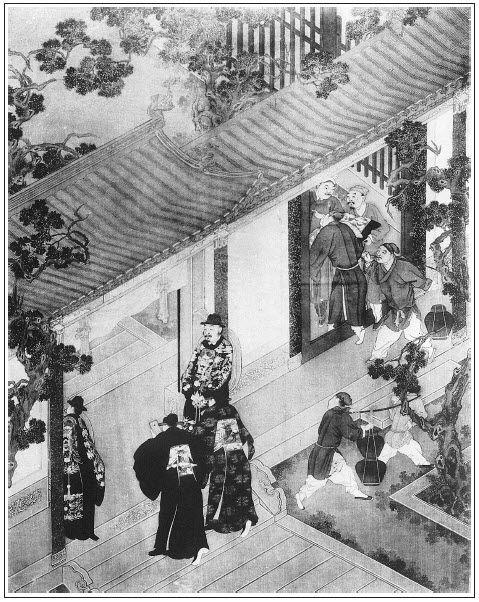

張回甚矣！夫作書者必大不得於時勢，方作寓言以垂世。今止言一家，不及天下國家，何以見怨之深，而不能忘哉！故此回歷敘運艮峰之賞，無謂諸奸臣之貪位慕祿，以一發胸中之恨也。
又入何太監。何永壽，見何者不可苟延歲月，而必以財色速之也。夏延齡、何永壽，又特為西門下針砭也。夏延齡，實始終金蓮者也。蓋言蓮茂於夏，而龍溪有水，可以栽蓮，今夏已去而河空流，雖故址猶存，韶光不是，眼見芳菲全歇，惟殘枝敗葉，搖漾秋風，支持霜雪耳。故賁四嫂必姓葉，而帶水以戰情郎。且東京一回之後，惟「踏雪訪月」，而葉落空林，景物蕭條，是又有賁四嫂、林太太等事也。此處於瓶兒新死，即寫夏大人之去，言金蓮之不久也。用筆如此，早瞞過千古看官。我今日觀之，乃知是一部《群芳譜》之寓言耳。
接連二本，又與曾御史、與蔡京本相映。
太監引酌，又幾乎排擠翟管家矣。看其用筆處自見。
此回寫一太尉，夾敘眾官，止覺金貂滿紙，卻不一犯手重複，又止覺滿紙奸險，不堪入目之態。宋末固應如此。寫出太尉獨謝何永壽之禮，則太監之勢可知，則西門附太監之榮又可知。總是以客形主也。
寫西門自加官至此，深淺皆見，又熱鬧已極。蓋市井至此，其福已不足當之矣。
此回寫諸官員，真有花團錦族之妙。
詩曰：
帝曰簡才能，旌賢在股肱。
文章體一變，禮樂道逾弘。
芸閣英華人，賓門鵷鷺登。
恩筵過所望，聖澤實超恆。

話說西門慶自此與李桂姐斷絕張旁寫月兒總為此一句，今後有月無花矣，其冷為何如？不題。卻說走差人到懷慶府林千戶處打聽消息，林千戶將陞官邸報封付與來人，又賞了五錢銀子，連夜來遞與提刑兩位官府。當廳夏提刑拆開，同西門慶先觀本衛行來考察官員照會，其略曰：
兵部一本：尊明旨，嚴考核，以昭勸懲，以光聖治事。先該金吾衛提督官校太尉太保兼太子太保朱題前事，考察禁衛官員，除堂上官自陳外，其餘兩廂詔獄緝捕、內外提刑所指揮千百戶、鎮撫等官，各挨次格，從公舉劾，甄別賢否，具題上請，當下該部詳議，黜陟升調降革等因。
奉聖旨：兵部知道，欽此欽遵。抄出到部。看得太尉朱題前事，遵奉舊例，委的本官殫力致忠，公於考核，皆出聞見之實，而無偏執之私。足以勵人心而孚公議，無容臣等再喙。但恩威賞罰，出自朝廷，合候命下之日，一體照例施行等因。續奉欽依擬行。
內開：山東提刑所正千戶夏延齡，資望既久，才練老成，昔視典牧而坊隅安靜，今理齊刑而綽有政聲，宜加獎勵，以冀甄升，可備鹵簿之選者也。
貼刑副千戶西門慶，才幹有為，精察素著。家稱殷實而在任不貪，國事克勤而台工有績。翌神運而分毫不索，張夾何處入來雪峰之力。司法令而齊民果仰。宜加轉正，以掌刑名者也。懷慶提刑千戶所正千戶林承勳，年清優學，占籍武科，繼祖職抱負不凡，提刑獄詳明有法，可加獎勵簡任者也。張夾虛陪一人，妙。副千戶謝恩，年齒既殘，昔在行猶有可觀，今任理刑罹軟尤甚，宜罷黜革任者也。張夾去者反謝恩，可痛，可良。
西門慶看了他轉正千戶掌刑，心中大悅。夏提刑見他升指揮，管鹵簿，大半日無言，面容失色。張夾如畫。於是又展開工部工完的本觀看，上面寫道：
工部一本，神運屆京，天人胥慶，懇乞天恩，俯加渥典，以蘇民困，以廣聖澤事。張夾可笑。
奉聖旨：這神運奉迎大內，奠安艮岳，以承天眷，朕心嘉悅。你每既效有勤勞，副朕事玄至意。所經過地方，委的小民困苦，著行撫按衙門，查勘明白，著行蠲免今歲田租之半。所毀壩閘，著部裡差官會同巡按御史，即行修理。完日還差內侍孟昌齡前去致祭。蔡京、李邦彥、王煒、鄭居中、高俅，輔弼朕躬，直贊內廷，勳勞茂著，京加太師，邦彥加柱國太子太師，王煒太傅，鄭居中、高俅太保，各賞銀五十兩、四表禮。蔡京還蔭一子為殿中監。國師林靈素，佐國宣化，遠致神運，北伐虜謀，實與天通，加封忠孝伯，食祿一千石，賜坐龍衣一襲，肩輿人內，賜號玉真教主，加淵澄玄妙廣德真人、金門羽客、達靈玄妙先生。繡眉慶賞如此，可想朝廷法紀。即此可為綱目補遺。朱勉、黃經臣，督理神運，忠勤可嘉。勉加太傅兼太子太傅，經臣加殿前都太尉，提督御前人船。各蔭一子為金吾衛正千戶。內侍李彥、張夾一陪。孟昌齡、張夾二陪。賈祥、張夾三陪。何沂、張夾主。藍從頤張夾四陪，又是藍氏之叔，然而則亦主也。著直延福五位宮近侍，各賜蟒衣玉帶，仍蔭弟侄一人為副千戶，俱見任管事。禮部尚書張邦昌、左侍郎兼學士蔡攸、右侍郎白時中、兵部尚書余深、工部尚書林攄，俱加太子太保，各賞銀四十兩，綵緞二表禮。張夾以上京職。
巡撫兩浙僉都御史張閣，升工部右侍郎。巡撫山東都御史侯濛，升太常正卿。巡撫兩浙、山東監察御史尹大諒、宋喬年，都水司郎中安忱、伍訓，各升俸一級，賞銀二十兩。祗迎神運千戶魏承勳、徐相、楊廷佩、司鳳儀、趙友蘭、扶天澤、西門慶、張夾此一人主也。田九皋等，各升一級。張夾以上外職。
內侍宋推等，營將王佑等，俱各賞銀十兩。所官薛顯忠等，各賞銀五兩。校尉昌玉等，張夾以上內侍之首。絹二疋。該衙門知道。
夏提刑與西門慶看畢，各散回家。後晌時分，有王三官差永定同文嫂拿請書，十一日請西門慶往他府中赴席，少罄謝私之意。西門慶收下，不勝歡喜，以為其妻指日在於掌握。繡夾可惡。張旁可畏。不期到初十日晚夕，東京本衛經歷司差人行照會：「曉諭各省提刑官員知悉：火速赴京，趕冬節見朝謝恩，毋得違誤取罪。」西門慶看了，到次日衙門中會了夏提刑，各人到家，即收拾行裝，備辦贄見禮物，約早晚起程。西門慶使玳安叫了文嫂兒，教他回王三官：「我今日不得來赴席，要上京見朝謝恩去。」文嫂連忙去回，王三官道：「既是老伯有事，容回來潔誠具請。」西門慶一面叫將賁四來，吩咐教他跟了去，與他五兩銀子，家中盤纏。留下春鴻看家，帶了玳安、王經跟隨答應。又問周守備討了四名巡捕軍人，四疋小馬，打點馱裝轎馬，排軍抬摃。張夾詳。夏提刑便是夏壽跟隨。張夾略。兩家共有二十餘人跟從。十二日起身離了清河縣，冬天易晚，晝夜趲行。到了懷西懷慶府會林千戶，千戶已上東京去了。一路天寒坐轎，天暖乘馬，朝登紫陌，暮踐紅塵。正是：
意急款搖青帳幕，心忙敲碎紫絲鞭。
話說一日到了東京，進得萬壽門。西門慶主意要往相國寺下。張夾點相火。夏提刑不肯，堅執要往他親眷崔中書家投下。西門慶不免先具拜帖拜見。正值崔中書在家，即出迎接，至廳敘禮相見，與夏提刑道及寒溫契闊之情。坐下茶畢，拱手問西門慶尊號。西門慶道：「賤號四泉。」因問：「老先生尊號？」崔中書道：「學生性最愚樸，名閒林下，賤名守愚，拙號遜齋。」因說道：「捨親龍溪久稱盛德，全仗扶持，同心協恭，莫此為厚。」西門慶道：「不敢。在下常領教誨，今又為堂尊，受益恆多，不勝感激。」夏提刑道：「長官如何這等稱呼！便不見相知了。」崔中書道：「四泉說的也是，名分使然。」言畢，彼此笑了。不一時，收拾行李。天晚了，崔中書吩咐童僕放桌擺飯，無非是果酌餚饌之類，不必細說。當日，二人在崔中書家宿歇不題。張夾一段下處。
到次日，各備禮物拜帖，家人跟隨，早往蔡太師府中叩見。那日太師在內閣還未出來，府前官吏人等如蜂屯蟻聚，擠匝不開。西門慶與夏提刑與了門上官吏兩包銀子，拿揭帖稟進去。翟管家見了，即出來相見，讓他到外邊私宅。先是夏提刑先見畢，然後西門慶敘禮，彼此道及往還酬答之意，各分賓位坐下。夏提刑先遞上禮帖：兩疋雲鶴金緞、兩疋色緞。翟管家是十兩銀子。西門慶禮帖上是一疋大紅絨彩蟒、一疋玄色妝花鬥牛補子員領、兩疋京緞，另外梯己送翟管家一疋黑綠雲絨、三十兩銀子。繡眉此兒大有體面。翟謙吩咐左右：「把老爺禮都收進府中去，上簿籍。」張夾一段太師府。他只受了西門慶那疋雲絨，將三十兩銀子連夏提刑的十兩銀子都不受，說道：「豈有此理。若如此，不見至交親情。」一面令左右放桌兒擺飯，說道：「今日聖上奉艮岳，新蓋上清寶菉宮，奉安牌匾，該老爺主祭，直到午後才散。到家同李爺又往鄭皇親家吃酒。只怕親家和龍溪等不的，誤了你每勾當。遇老爺閒，等我替二位稟就是一般。」西門慶道：「蒙親家費心。」張夾看他以下呼親家。一。翟謙因問：「親家那裡住？」張夾二。西門慶就把夏龍溪令親家下歇說了。不一時，安放桌席端正，就是大盤大碗，湯飯點心一齊拿上來，都是光祿烹炮，美味極品無加。每人金爵飲酒三杯，就要告辭起身。翟謙款留，令左右又篩上一杯。西門慶因問：「親家，張夾三。俺每幾時見朝？」翟謙道：「親家，張夾四。你同不得夏大人。張夾親熱。夏大人如今是京堂官，不在此例。你與本衛新升的副千戶何太監侄兒何永壽，他便貼刑，你便掌刑，與他作同僚了。他先謝了恩，只等著你見朝引奏畢，一同好領札付。你凡事只會他去。」夏提刑聽了，一聲兒不言語。西門慶道：「請問親家，張夾五。只怕我還要等冬至郊天回來見朝。」翟謙道：「親家，張夾六。你等不的冬至聖上郊天回來。那日天下官員上表朝賀，還要排慶成宴，你每怎等的？不如你今日先往鴻臚寺報了名，明日早朝謝了恩，直到那日堂上官引奏畢，領札付起身就是了。」西門慶謝道：「蒙親家張夾七。指教，何以為報！」臨起身，翟謙又拉西門慶到側淨處說話，繡眉照應。甚是埋怨西門慶說：「親家，張夾八。前日我的書上那等寫了，大凡事要謹密，不可使同僚每知道。親家張夾九。如何對夏大人說了？繡眉照應。教他央了林真人帖子來，張夾林千戶線也。立逼著朱太尉來對老爺說，繡眉包苴賄賂如此，尚有法守乎？要將他情願不管鹵簿，仍以指揮職銜在任所掌刑三年；何太監又在內廷，轉央朝廷所寵安妃劉娘娘的分上，便也傳旨出來，親對老爺和朱太尉說了，要安他侄兒何永壽在山東理刑。兩下人情阻住了，教老爺好不作難！不是我再三在老爺跟前維持，回倒了林真人，把親家張夾十。不撐下去了？」慌的西門慶連忙打躬，說道：「多承親家張夾十一。盛情！我並不曾對一人說，此公何以知之？」翟謙道：「自古機事不密則害成，今後親家凡事謹慎些便了。」張夾十二。西門慶千恩萬謝，張夾一段翟管家。與夏提刑作辭出門。
來到崔中書家，一面差賁四鴻臚寺報了名。次日同夏提刑見朝，青衣冠帶，正在午門前謝恩出來，剛轉過西闕門來，只見一個青衣人走向前問道：「那位是山東提刑西門老爹？」賁四問道：「你是那裡的？」那人道：「我是內府匠作監何公公來請老爹說話。」言未畢，只見一個太監，身穿大紅蟒衣，頭戴三山帽，腳下粉底皂靴，從御街定聲叫道：「西門大人請了！」張夾看他呼大人，一。西門慶遂與夏提刑分別，被這太監用手一把拉在旁邊一所值房內，相見作揖，慌的西門慶倒身還禮不迭。這太監說道：「大人，張夾二。你不認的我，在下是匠作監太監何沂，見在延寧第四宮端妃馬娘娘位下近侍。昨日內工完了，蒙萬歲爺爺恩典，將侄兒何永壽升受金吾衛副千戶，見在貴處提刑所理刑管事，與老大人作同僚。」張夾三。西門慶道：「原來是何老太監，學生不知，恕罪，恕罪！」一面又作揖說道：「此禁地，不敢行禮，容日到老太監外宅進拜。」於是敘禮畢，讓坐，家人捧茶來吃了。茶畢，就揭桌盒蓋兒，桌上許多湯飯餚品，拿盞箸兒來安下。何太監道：「不消小杯了，我曉的大人朝下來，張夾四。天氣寒冷，拿個小盞來，沒甚餚饌，褻瀆大人，張夾五。且吃個頭腦兒罷。」西門慶道：「不當厚擾。」何太監於是滿斟上一大杯，遞與西門慶，西門慶道：「承老太監所賜，學生領下。只是出去還要見官拜部，若吃得面紅，不成道理。」何太監道：「吃兩盞兒燙寒何害！」因說道：「舍侄兒年幼，不知刑名，望乞大人看我面上，張夾六。同僚之間，凡事教導他教導。」西門慶道：「豈敢。老太監勿得太謙，令侄長官雖是年幼，居氣養體，自然福至心靈。」何太監道：「大人好說。常言：學到老不會到老。天下事如牛毛，孔夫子也只識的一腿。繡眉妙語，非老太監不能道。張夾是太監話。恐有不到處，大人好歹說與他。」張夾七。西門慶道：「學生謹領。」因問：「老大監外宅在何處？學生好來奉拜長官。」何太監道：「舍下在天漢橋東，文華坊雙獅馬台就是。」亦問：「大人下處張夾八。在那裡？我教做官的先去叩拜。」西門慶道：「學生暫借崔中書家下。」彼此問了住處，西門慶吃了一大杯就起身。何太監送出門，拱著手說道：「適間所言，大人凡事看顧看顧。張夾九。他還等著你一答兒引奏，好領札付。」西門慶道：「老太監不消吩咐，學生知道。」張夾一段何太監。於是出朝門，又到兵部，又遇見了夏提刑，同拜了部官來。張夾一段兵部。比及到本衛參見朱太尉，遞履歷手本，繳札付，又拜經歷司並本所官員，已是申刻時分。張夾一段本衛。夏提刑改換指揮服色，另具手本參見了朱太尉，免行跪禮，擇日南衙到任。剛出衙門，西門慶還等著，遂不敢與他同行，讓他先上馬。夏延齡那裡肯？定要同行。西門慶趕著他呼「堂尊」，夏指揮道：「四泉，你我同僚在先，為何如此稱呼？」西門慶道：「名分已定，自然之理，何故太謙。」因問：「堂尊高昇美任，不還山東去了，寶眷幾時搬取？」夏延齡道：「欲待搬來，那邊房舍無人看守。如今且在捨親這邊權住，直待過年，差人取家小罷了。還望長官早晚看顧一二。房子若有人要，就央長官替我打發，自當報謝。」張夾即接入。西門慶道：「學生謹領。請問府上那房價值若干？」夏延齡道：「舍下此房原是一千三百兩買的，後邊又蓋了一層，使了二百兩，如今賣原價也罷了。」
二人歸到崔宅，張夾夾寫夏公。王經向前稟說：「新升何老爹來拜，下馬到廳。小的回部中還未來家。何老爹說多拜上夏老爹、崔老爹，都投下帖。午間又差人送了兩疋金緞來。」宛紅帖兒拿與西門慶看，上寫著：「謹具緞帕二端，奉引贄敬。寅侍教生何永壽頓首拜。」張夾何夏二對，正刺西門慶也。西門慶看了，連忙差王經封了兩疋南京五彩獅補員領，寫了禮帖。吃了飯，連忙往何家回拜去。到於廳上，何千戶忙出來迎接，烏紗皂履，年紀不上二十歲，生的面如傅粉，唇若塗朱，張夾有藍氏在內。趨下階來揖讓，退遜謙恭特甚。二人到廳上敘禮，西門慶令玳安捧上贄見之禮，拜下去，說道：「適承光顧，兼領厚儀，又失迎迓。今早又蒙老公公值房賜饌，感德不盡。」何千戶忙還禮說：「學生叨受微職，忝與長官同例，早晚得領教益，實為三生有幸。適間進拜不遇，又承垂顧，蓬篳光生。」令左右收下去，一面扯椅兒分賓主坐下，左右捧茶上來。喫茶之間，彼此問號，西門慶道：「學生賤號四泉。」張夾四泉，市井也。天泉，則河矣。相映不堪。何千戶道：「學生賤號天泉。」又問：「長官今日拜畢部堂了？」西門慶道：「從內裡蒙公公賜酒出來，拜畢部，又到本衙門見堂，繳了札付，拜了所司。出來就要奉謁長官，不知反先辱長官下顧。」何千戶因問：「長官今日與夏公都見朝來？」西門慶道：「夏龍溪已升了指揮直駕，今日都見朝謝恩在一處，只到衙門見堂之時，他另具手本參見。」說畢，何千戶道：「咱每還是先與本主老爹進禮，還是先領札付？」西門慶道：「依著捨親說，咱每先在衛主宅中進了禮，然後大朝引奏，還在本衙門到堂同眾領札付。」何千戶道：「既是如此，咱每明早備禮進了罷。」於是都會下各人禮數，何千戶是兩疋蟒衣、一束玉帶，西門慶是一疋大紅麒麟金緞、一疋青絨蟒衣、一柄金鑲玉絛環，各金華酒四壇。明早在朱太尉宅前取齊。約會已定，茶湯兩換，西門慶告辭而回，張夾正寫何千戶。並不與夏延齡題此事。張夾是翟管家囑後。一宿晚景題過。
到次日，張夾又次日。早到何千戶家。何千戶又預備頭腦小席，大盤大碗，齊齊整整，連手下人飽餐一頓，張夾是西門作客而何家為主。然後同往太尉宅門前來。賁四同何家人押著禮物。那時正值朱太尉新加太保，徽宗天子又差使往南壇視牲未回，各家饋送賀禮並參見官吏人等，黑壓壓在門首等候。張夾一總。何千戶同西門慶下了馬，在左近一相識人家坐的，張夾單寫二千戶。差人打聽老爺道子響就來通報。直等到午後，忽見一人飛馬而來，傳報道：「老爺視牲回來，進南薰門了。」張夾一映。吩咐閒雜人打開。不一時，又騎報回來，傳：「老爺過天漢橋了。」張夾又一映。少頃，只見官吏軍士各打執事旗牌，一對一對傳呼，走了半日，才遠遠望見朱太尉八抬八簇肩輿明轎，頭戴烏紗，身穿猩紅鬥牛絨袍，腰橫荊山白玉，懸掛太保牙牌、黃金魚鑰，好不顯赫威嚴！執事到了宅門首，都一字兒擺開，喝的肅靜迴避，無一人聲嗽。那來見的官吏人等，黑壓壓一群跪在街前。良久，太尉轎到跟前，左右喝聲：「起來伺候！」那眾人一齊應諾，誠然聲震雲霄。只聽東邊咚咚鼓樂響動，原來本衙門六員太尉堂官，張夾先提明六太尉。見朱太尉新加光祿大夫、太保，又蔭一子為千戶，都各備大禮，治酒慶賀，故有許多教坊伶官在此動樂。太尉才下轎，樂就止了。各項官吏人等，預備進見。張夾一緊。忽然一聲道子響，張夾又一開。一青衣承差手拿兩個紅拜帖，飛走而來，遞與門上人說：「禮部張爺與學士蔡爺來拜。」連忙稟報進去。須臾轎在門首，尚書張邦昌與侍郎蔡攸，都是紅吉服孔雀補子，一個犀帶，一個金帶，進去拜畢，待茶畢，送出來。張夾一個。又是吏部尚書王祖道與左侍郎韓侶、右侍郎尹京也來拜，朱太尉都待茶送了。張夾三個。又是皇親喜國公、樞密使鄭居中、駙馬掌宗人府王晉卿，都是紫花玉帶來拜。唯鄭居中坐轎，這兩個都騎馬。送出去，張夾二個。方是本衙堂上六員太尉到了：頭一位是提督管兩廂捉察使孫榮，第二位管機察梁應龍，第三管內外觀察典牧皇畿童太尉侄兒童天胤，第四提督京城十三門巡察使黃經臣，第五管京營衛緝察皇城使竇監，第六督管京城內外巡捕使陳宗善。都穿大紅，頭戴貂蟬，惟孫榮是太子太保玉帶，餘者都是金帶。下馬進去。張夾六個。各家都有金幣禮物。繡眉一路寫得威儀顯赫，可見勢利不可一刻無。張夾一總。少頃，裡面樂聲響動，眾太尉插金花，與朱太尉把盞遞酒，階下一派簫韶盈耳，兩行絲竹和鳴。端的食前方丈，花簇錦筵。怎見得太尉的富貴？但見：
官居一品，位列三台。赫赫公堂，潭潭相府。虎符玉節，門庭甲仗生寒；象板銀箏，磈礧排場熱鬧。終朝謁見，無非公子王孫；逐歲追游，儘是侯門戚里。那裡解調和燮理，一味能趨諂逢迎。端的談笑起干戈，真個吹噓驚海岳。假旨令八位大臣拱手，巧辭使九重天子點頭。督擇花石，江南淮北盡災殃；進獻黃楊，國庫民財皆匱竭。
正是：
輦下權豪第一，人間富貴無雙。
須臾遞畢，安席坐下。一班兒五個俳優，朝上箏𥱧琵琶，方響箜篌，紅牙象板，唱了一套「享富貴，受皇恩」。張夾奸臣試想。當時酒進三巡，歌吟一套，六員太尉起身，朱太尉親送出來，回到廳，樂聲暫止，管家稟事，各處官員進見。張夾方入。朱太尉令左右抬公案，當廳坐下，吩咐出來，先令各勳戚中貴仕宦家人送禮的進去。張夾賓客一行。須臾打發出來，才是本衛紀事、南北衛兩廂、五所、七司捉察、譏察、觀察、巡察、典牧、直駕、提牢、指揮、千百戶等官，各具手本呈遞。張夾內屬一行。然後才傳出來，叫兩淮、兩浙、山東、山西、關東、關西、河東、河北、福建、廣南、四川十三省提刑官挨次進見。張夾外屬一行。西門慶與何千戶在第五起上，抬進禮物去，管家接了禮帖，鋪在書案上，二人立在階下，等上邊叫名字。西門慶抬頭見正面五間廠廳，上面朱紅牌匾，懸著徽宗皇帝御筆欽賜「執金吾堂」斗大四個金字，甚是顯赫。須臾叫名，二人應諾升階，到滴水簷前躬身參謁，四拜一跪，聽發放。朱太尉道：「那兩員千戶，怎的又叫你家太監送禮來？」張夾單言太監，妙。令左右收了，吩咐：「在地方謹慎做官，我這裡自有公道。伺候大朝引奏畢，來衙門中領札赴任。」二人齊聲應諾。左右喝：「起去！」由左角門出來。剛出大門來，尋見賁四等抬擔出來，張夾如畫。正要走，忽見一人拿宛紅帖張夾又找二個。飛馬來報，說道：「王爺、高爺來了。」西門慶與何千戶閃在人家門裡觀看。須臾，軍牢喝道，只見總督京營八十萬禁軍隴西公王燁，同提督神策御林軍總兵官太尉高俅，俱大紅玉帶，坐轎而至。那各省參見官員一湧出來，又不得見了。西門慶與何千戶走到僻處，呼跟隨人扯過馬來，二人方騎上馬回寓。張夾上生日寫太師，是個太師；此寫太尉，又是個太尉。有此等太師及此等太尉，方有此等上壽進見者矣。正是：
權奸誤國禍機深，開國承家戒小人。
逆賊深誅何足道，奈何二聖遠蒙塵。
文回文禹門云：此一回．西門慶赴東京，比上次又不同，開了許多眼界，見了多少場面，添了些諂媚伎倆，長了些驕傲神情。雖花了許多銀錢，卻學了乖亦不少。
竊嘗謂都會之所，最足以出息人物，亦最足敗壞人材。五方雜處之區，無所不有，亦無所不精也。每見外省聰明子弟，倜儻文人，其言談舉動，未嘗不佳，而總覺帶些土氣，往往中等之質。到京盤桓數月，其氣象便迥然不同。但觀曾會試舉人不曾會試舉人，不但字法一變，文法一變，即五官亦有異也；然久於都城者，未得良朋益友，其不失其本質者，蓋罕。